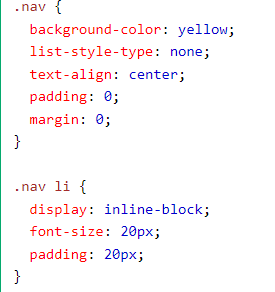
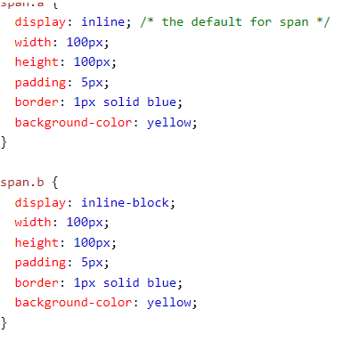
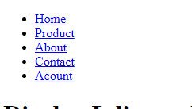

Display Inline vs Inline Blocks
How are both used
One common use for display: inline-block is to display list items horizontally instead of vertically. creating navigation links are example and this allows to set a width and height on the element.

example of inline-block positioning code

example of inline positioning code
Also, with display: inline-block, the top and bottom margins/paddings are respected, but with display: inline they are not. Compared to display: block, the major difference is that display: inline-block does not add a line-break after the element, so the element can sit next to other elements.
The following example shows the different behavior of display: inline, display: inline-block

inline posioning output